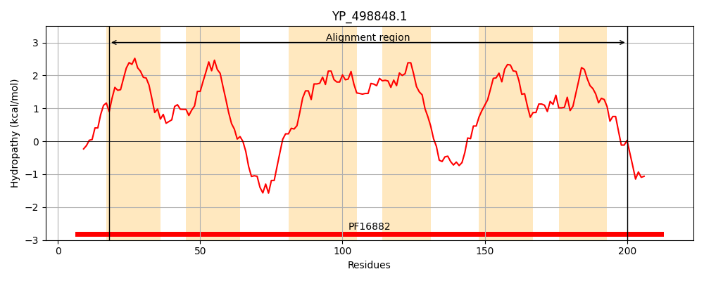
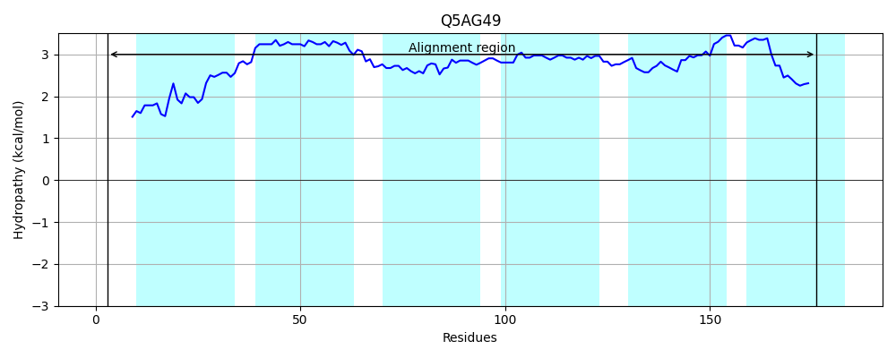
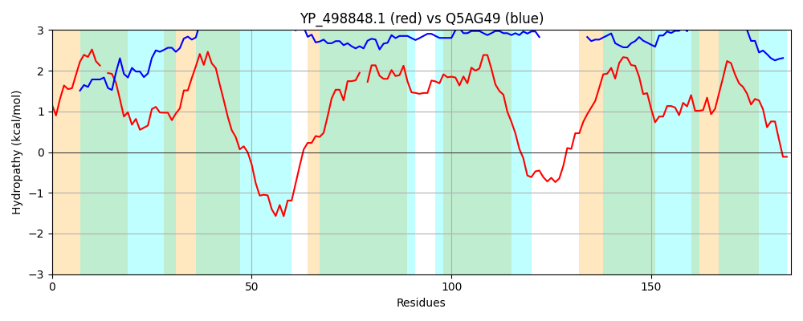

Hit Accession: Q5AG49
Hit TCID: 9.B.14.1.12
Hit Description: gnl|BL_ORD_ID|14268 gnl|TC-DB|Q5AG49|9.B.14.1.12 Putative uncharacterized protein OS=Candida albicans (strain SC5314 / ATCC MYA-2876) GN=CaO19.4331 PE=4 SV=1
Mach Len: 185
e:0.000252
Query TMS Count : 6
Hit TMS Count: 6
TMS-Overlap Score: 5.250000
Predicted Substrates:None
BLAST Alignment:
Score: 92 , Bit scores: 40 bits, E-value: 2.5e-04, Alignment length: 185, Percentage identity: 20
Query: 18 TVLGVFVVAVSLF-FDAIMFFYAKLYDKLPMYLLVFMAFTAVILIMMYIQEKNENYKVEKRYVVRYLTLNVIVGYTLP-LLFVSIYVFGVVGFGFDVFNYCLGIILMLFISWLGLFLFYKNEFDSENPNPAVNAIAIIIKLFAFGGIFYISLIVPVTQQEEIFIGLSIFINIIVDALLVRSYFNY 200
T L VF +++F F+ IMFF + + ++++F+ ++ +M + + + + + L L++++ ++ LLF+ ++F + F +F + + M F+ ++ L F F +I LF F ++S + + IF+ L I I +++ +++ + NY
Sbjct: 3 TFLMVFKKFITIFIFETIMFFLFTMVFRFLFFMILFLFLFMILFFLMILFFLMILFFLMILFFLMVLFLSMVLSLSVFFLLFMFFFLFFFLSMVFFLFLFMFLLFFMFFLFFMFLLFFMFLLF-----------FMFMIFLFTFMIFLFLSFMFLLLFMFMIFLLLLIMILLLLSLMVLFLFINY 176 | Protein Hydropathy Plots: |
|---|
|  |  |
Pairwise Alignment-Hydropathy Plot:
|
|---|
|  |